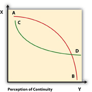
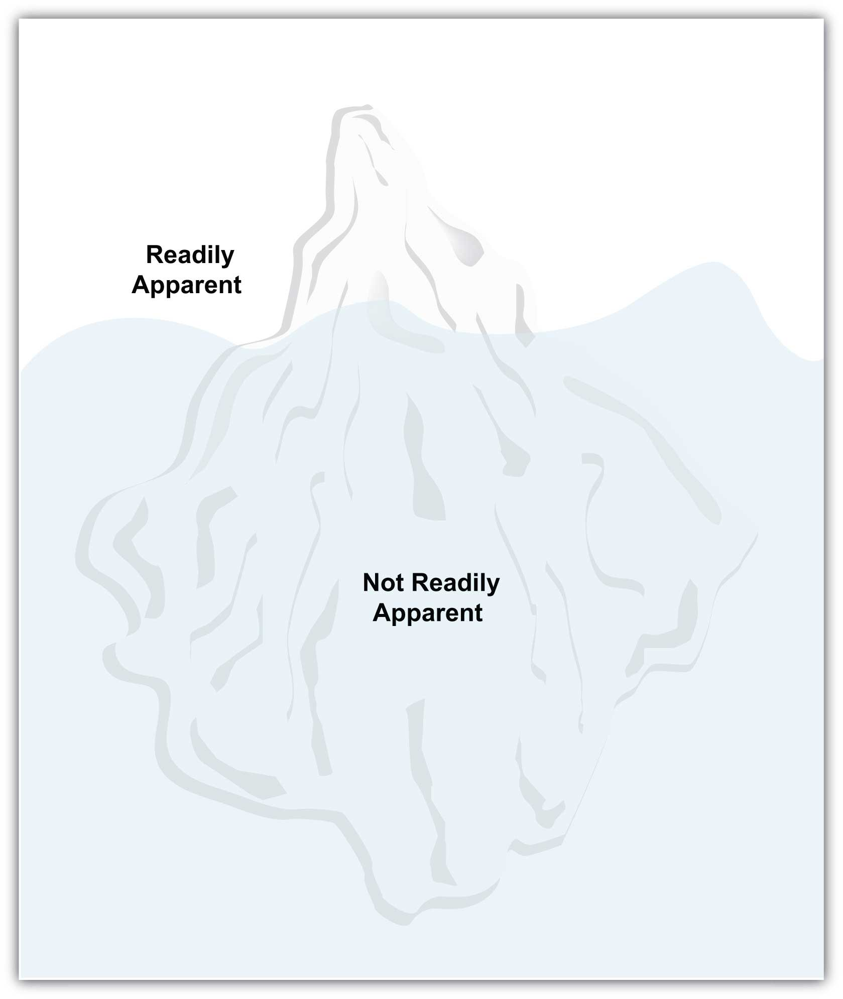

Your mind is like a parachute. It works best when it’s open.
Anonymous
To see an object in the world we must see it as something.
Ludwig Wittgenstein
You will either step forward into growth or you will step back into safety.
Abraham Maslow
1. In order to communicate with others, you need to know yourself. Please complete a personal inventory, a simple list of what comes to mind in these five areas:
2. To be a successful communicator, it is helpful to be conscious of how you view yourself and others. Please consider what groups you belong to, particularly in terms of race, ethnicity, or culture. Imagine that you had to communicate your perception of just one of these groups. Please choose five terms from the list below, and indicate the degree to which you agree or disagree that the term describes the group accurately.
| Term | Describes the Group Accurately | ||||
|---|---|---|---|---|---|
| 1—Strongly disagree | 2—Somewhat disagree | 3—Neither agree nor disagree | 4—Somewhat agree | 5—Strongly agree | |
| Independent | |||||
| Dependent | |||||
| Hardworking | |||||
| Lazy | |||||
| Progressive | |||||
| Traditional | |||||
| Sophisticated | |||||
| Simple | |||||
| Creative | |||||
| Practical | |||||
3. Now consider a group that you have little or no contact with. Please choose five terms (the same ones or different ones) and again indicate how accurately they describe the group. How do your results compare with those in Exercise 2?Adapted from Gudykunst, W. (1994). Ethnocentrism scale and instructions. In Bridging differences: Effective intergroup communication (2nd ed., pp. 98–99). Thousand Oaks, CA: Sage.
4. Please find the hidden message:Adapted from McLean, S. (2003). The basics of speech communication. Boston, MA: Allyn & Bacon.
Figure 3.1

5. Connect the dots by drawing four straight lines, making sure not to lift your pen from the paper or retrace lines.Adapted from McLean, S. (2003). The basics of speech communication. Boston, MA: Allyn & Bacon.
Figure 3.2 Nine-Dot Problem
Communicating involves the translation of your thoughts and ideas to words. Speaking or writing involves sharing your perspective with others. If you talk to yourself, the action is a reflection of the communication process, but you play the role of audience. In your head, you may make sense of your words and their meaning, but when I hear what you said, what you meant may escape me. I might not “get it” because I don’t know you, your references, your perspectives, your word choices, or your underlying meaning and motivation for speaking in the first place. In this chapter we’ll discuss perspectives, and how people perceive information, as we learn how communication is an imperfect bridge to understanding. It requires our constant attention, maintenance, and effort.
Knowing your audience involves understanding others, and their perspectives, to see if they understand your words, examples, or the frames of reference you use to communicate your experiences, points, and conclusions. Ask yourself when you last had a miscommunication with someone. No doubt it was fairly recently, as it is for most people.
It’s not people’s fault that language, both verbal and nonverbal, is an imperfect system. We can, however, take responsibility for the utility and limitations of language to try to gain a better understanding of how we can communicate more effectively. As a communicator, consider both the role of the speaker and the audience and not only what and how you want to communicate but also what and how your audience needs you to communicate with them in order to present an effective message.
Figure 3.3 Solution to Introductory Exercise 5 (the “Nine-Dot Problem”)
Take, for example, the word “love.” Yes, we recognize those four little letters all in a row, but what does it really mean? You can use it to describe the feelings and emotions associated with your mother, a partner, or perhaps your dog. Or you might say you love chocolate cake. Does your use of the word in any given context allow the audience to get any closer to what you mean by this word, “love”? The key here is context, which provides clues to how you mean the word and what its use means to you. The context allows you to close the gap between your meaning of “love” and what the receiver, or audience, has in their range of understanding of the same word. Your experiences are certainly different, but through clues, contexts, and attempts to understand each other’s perspectives, we can often communicate more effectively.
This gives rise to an issue: how do I deal with twenty or twenty-five “perspectives” in a classroom or a reading audience of infinite size and try to narrow the gap with each audience member? Before we tackle this question, let’s first follow the advice given by the character Polonius in Shakespeare’s Hamlet: “To thine own self be true.” This relates to the notion that you need to know yourself, or your perspective, before you can explore ways to know others and communicate more effectively. You will examine how you perceive stimuli, choosing some information over others, organizing the information according to your frame of reference, and interpreting it, deciding what it means to you and whether you should remember it or just ignore it and move on. We can recognize that not everyone tunes in to the same music, trends in clothing, or even classes, so experiences or stimuli can have different meanings. Still, we can find common ground and communicate effectively.
In the first of the Note 3.1 "Introductory Exercises" for this chapter, you listed terms to describe yourself. This exercise focuses on your knowledge, skills, experience, interests, and relationships. Your sense of self comes through in your oral and written presentations. Public communication starts with intrapersonal communication, or communication with yourself. You need to know what you want to say before you can say it to an audience.
Understanding your perspective can lend insight to your awarenessThe ability to be conscious of events and stimuli., the ability to be conscious of events and stimuli. Awareness determines what you pay attention to, how you carry out your intentions, and what you remember of your activities and experiences each day. Awareness is a complicated and fascinating area of study. The way we take in information, give it order, and assign it meaning has long interested researchers from disciplines including sociology, anthropology, and psychology.
Your perspective is a major factor in this dynamic process. Whether you are aware of it or not, you bring to the act of reading this sentence a frame of mind formed from experiences and education across your lifetime. Imagine that you see a presentation about snorkeling in beautiful Hawaii as part of a travel campaign. If you have never been snorkeling but love to swim, how will your perspective lead you to pay attention to the presentation? If, however, you had a traumatic experience as a child in a pool and are now afraid of being under water, how will your perspective influence your reaction?
Learning to recognize how your perspective influences your thoughts is a key step in understanding yourself and preparing to communicate with others.
The communication process itself is the foundation for oral and written communication. Whether we express ourselves in terms of a live, face-to-face conversation or across a voice over Internet protocol (VoIP) chat via audio and visual channels, emoticons (:)), and abbreviations (IMHO [In My Humble Opinion]), the communication process remains the same. Imagine that you are at work and your Skype program makes the familiar noise indicating that someone wants to talk. Your caller ID tells you that it is a friend. You also know that you have the report right in front of you to get done before 5:00 p.m. Your friend is quite a talker, and for him everything tends to have a “gotta talk about it right now” sense of urgency. You know a little bit about your potential audience or conversational partner. Do you take the call? Perhaps you chat back “Busy, after 5,” only to have him call again. You interpret the ring as his insistent need for attention, but you have priorities. You can choose to close the Skype program, stop the ringing, and get on with your report, but do you? Communication occurs on many levels in several ways.
When we communicate, we are full of expectations, doubts, fears, and hopes. Where we place emphasis, what we focus on, and how we view our potential has a direct impact on our communication interactions. You gather a sense of self as you grow, age, and experience others and the world. At various times in your life, you have probably been praised for some of your abilities and talents, and criticized for doing some things poorly. These compliments and criticisms probably had a deep impact on you. Much of what we know about ourselves we’ve learned through interaction with others. Not everyone has had positive influences in their lives, and not every critic knows what they are talking about, but criticism and praise still influence how and what we expect from ourselves.
Carol Dweck, a psychology researcher at Stanford University, states that “something that seems like a small intervention can have cascading effects on things we think of as stable or fixed, including extroversion, openness to new experience, and resilience.”Begley, S. (2008, December 1). When DNA is not destiny. Newsweek, p. 14. Your personality and expressions of it, like oral and written communication, were long thought to have a genetic component. But, says Dweck, “More and more research is suggesting that, far from being simply encoded in the genes, much of personality is a flexible and dynamic thing that changes over the life span and is shaped by experience.”Begley, S. (2008, December 1). When DNA is not destiny. Newsweek, p. 14. If you were told by someone that you were not a good speaker, know this: You can change. You can shape your performance through experience, and a business communication course, a mentor at work, or even reading effective business communication authors can result in positive change.
When you consider what makes you you, the answers multiply as do the questions. As a baby, you learned to recognize that the face in the mirror was your face. But as an adult, you begin to wonder what and who you are. While we could discuss the concept of self endlessly and philosophers have wrestled and will continue to wrestle with it, for our purposes, let’s focus on selfOne’s own sense of individuality, personal characteristics, motivations, and actions., which is defined as one’s own sense of individuality, motivations, and personal characteristics.McLean, S. (2003). The basics of speech communication. Boston, MA: Allyn & Bacon. We also must keep in mind that this concept is not fixed or absolute; instead it changes as we grow and change across our lifetimes.
One point of discussion useful for our study about ourselves as communicators is to examine our attitudes, beliefs, and values. These are all interrelated, and researchers have varying theories as to which comes first and which springs from another. We learn our values, beliefs, and attitudes through interaction with others. Table 3.1 "Attitudes, Beliefs, and Values" defines these terms and provides an example of each.
Table 3.1 Attitudes, Beliefs, and Values
| Definition | Changeable? | Example | |
|---|---|---|---|
| Attitudes | Learned predispositions to a concept or object | Subject to change | I enjoyed the writing exercise in class today. |
| Beliefs | Convictions or expressions of confidence | Can change over time | This course is important because I may use the communication skills I am learning in my career. |
| Values | Ideals that guide our behavior | Generally long lasting | Effective communication is important. |
An attitudeYour immediate disposition toward a concept or an object. is your immediate disposition toward a concept or an object. Attitudes can change easily and frequently. You may prefer vanilla while someone else prefers peppermint, but if someone tries to persuade you of how delicious peppermint is, you may be willing to try it and find that you like it better than vanilla.
BeliefsIdeas based on our previous experiences and convictions, not necessarily based on logic or fact. are ideas based on our previous experiences and convictions and may not necessarily be based on logic or fact. You no doubt have beliefs on political, economic, and religious issues. These beliefs may not have been formed through rigorous study, but you nevertheless hold them as important aspects of self. Beliefs often serve as a frame of reference through which we interpret our world. Although they can be changed, it often takes time or strong evidence to persuade someone to change a belief.
ValuesCore concepts and ideas of what we consider good or bad, right or wrong, or what is worth the sacrifice. are core concepts and ideas of what we consider good or bad, right or wrong, or what is worth the sacrifice. Our values are central to our self-image, what makes us who we are. Like beliefs, our values may not be based on empirical research or rational thinking, but they are even more resistant to change than are beliefs. To undergo a change in values, a person may need to undergo a transformative life experience.
For example, suppose you highly value the freedom to make personal decisions, including the freedom to choose whether or not to wear a helmet while driving a motorcycle. This value of individual choice is central to your way of thinking and you are unlikely to change this value. However, if your brother was driving a motorcycle without a helmet and suffered an accident that fractured his skull and left him with permanent brain damage, you might reconsider this value. While you might still value freedom of choice in many areas of life, you might become an advocate for helmet laws—and perhaps also for other forms of highway safety, such as stiffer penalties for cell-phone talking and texting while driving.
Your self-concept is composed of two main elements: self-image and self-esteem.
Your self-imageHow you see yourself, how you would describe yourself to others. is how you see yourself, how you would describe yourself to others. It includes your physical characteristicsEye color, hair length, height, and so forth.—your eye color, hair length, height, and so forth. It also includes your knowledge, experience, interests, and relationships. If these sound familiar, go back and look at the first of the Note 3.1 "Introductory Exercises" for this chapter. In creating the personal inventory in this exercise, you identified many characteristics that contribute to your self-image. In addition, image involves not just how you look but also your expectations of yourself—what you can be.
What is your image of yourself as a communicator? How do you feel about your ability to communicate? While the two responses may be similar, they indicate different things. Your self-esteemHow you feel about yourself; your feelings of self-worth, self-acceptance, and self-respect. is how you feel about yourself; your feelings of self-worth, self-acceptance, and self-respect. Healthy self-esteem can be particularly important when you experience a setback or a failure. Instead of blaming yourself or thinking, “I’m just no good,” high self-esteem will enable you to persevere and give yourself positive messages like “If I prepare well and try harder, I can do better next time.”
Putting your self-image and self-esteem together yields your self-conceptWhat we perceive ourselves to be.: your central identity and set of beliefs about who you are and what you are capable of accomplishing. When it comes to communicating, your self-concept can play an important part. You may find that communicating is a struggle, or the thought of communicating may make you feel talented and successful. Either way, if you view yourself as someone capable of learning new skills and improving as you go, you will have an easier time learning to be an effective communicator. Whether positive or negative, your self-concept influences your performance and the expression of that essential ability: communication.
In addition to how we view ourselves and feel about ourselves, of course, we often take into consideration the opinions and behavior of others. Charles Cooley’sCooley, C. (1922). Human nature and the social order (Rev. ed.). New York, NY: Scribners. looking-glass selfHow we look to others and how they view us, treat us, and interact with us to gain insight of our own identity. reinforces how we look to others and how they view us, treat us, and interact with us to gain insight of our identity. We place an extra emphasis on parents, supervisors, and on those who have some degree of control over us when we look at others. Developing a sense of self as a communicator involves balance between constructive feedback from others and constructive self-affirmation. You judge yourself, as others do, and both views count.
Now, suppose that you are treated in an especially encouraging manner in one of your classes. Imagine that you have an instructor who continually “catches you doing something right” and praises you for your efforts and achievements. Would you be likely to do well in this class and perhaps go on to take more advanced courses in this subject?
In a psychology experiment that has become famous through repeated trials, several public school teachers were told that specific students in their classes were expected to do quite well because of their intelligence.Rosenthal, R., & Jacobson, L. (1968). Pygmalion in the classroom. New York, NY: Holt, Rinehart, & Winston. These students were identified as having special potential that had not yet “bloomed.” What the teachers didn’t know was that these “special potential” students were randomly selected. That’s right: as a group, they had no more special potential than any other students.
Can you anticipate the outcome? As you may guess, the students lived up to their teachers’ level of expectation. Even though the teachers were supposed to give appropriate attention and encouragement to all students, in fact they unconsciously communicated special encouragement verbally and nonverbally to the special potential students. And these students, who were actually no more gifted than their peers, showed significant improvement by the end of the school year. This phenomenon came to be called the “Pygmalion effect” after the myth of a Greek sculptor named Pygmalion, who carved a marble statue of a woman so lifelike that he fell in love with her—and in response to his love she did in fact come to life and marry him.Rosenthal, R., & Jacobson, L. (1968). Pygmalion in the classroom. New York, NY: Holt, Rinehart, & Winston.,Insel, P., & Jacobson, L. (1975). What do you expect? An inquiry into self-fulfilling prophecies. Menlo Park, CA: Cummings.
In more recent studies, researchers have observed that the opposite effect can also happen: when students are seen as lacking potential, teachers tend to discourage them or, at a minimum, fail to give them adequate encouragement. As a result, the students do poorly.Schugurensky, D. (Ed.). (2009). Selected moments of the 20th century. In History of education: A work in progress. Department of Adult Education, Community Development and Counselling Psychology, The Ontario Institute for Studies in Education of the University of Toronto (OISE/UT). Retrieved from http://fcis.oise.utoronto.ca/~daniel_sc/assignment1/1968rosenjacob.html. Pygmalion in the Classroom was followed by many other school-based studies that examined these mechanisms in detail from different perspectives. Prominent among the works on this subject conducted by U.S. scholars are Rist, R. C. (1970, August). Student social class and teacher expectations: The self-fulfilling prophecy in ghetto education. Harvard Educational Review, 40(3), 411–451; Anyon, J. (1980, Fall). Social class and the hidden curriculum of work. Journal of Education, 162(1), 67–92; Oakes, J. (1985). Keeping track: How schools structure inequality. Birmingham, NY: Vail-Ballou Press; and Sadker, M., & Sadker, D. (1994). Failing at fairness: How America’s schools cheat girls. New York, NY: Macmillan Publishing Company.
When people encourage you, it affects the way you see yourself and your potential. Seek encouragement for your writing and speaking. Actively choose positive reinforcement as you develop your communication skills. You will make mistakes, but the important thing is to learn from them. Keep in mind that criticism should be constructive, with specific points you can address, correct, and improve.
The concept of a self-fulfilling prophecyPhenomenon in which someone’s behavior comes to match and mirror others’ expectations., in which someone’s behavior comes to match and mirror others’ expectations, is not new. Robert Rosenthal,Rosnow, R., & Rosenthal, R. (1999). Beginning behavioral research: A conceptual primer (3rd ed.). Englewood Cliffs, NJ: Prentice Hall. a professor of social psychology at Harvard, has observed four principles while studying this interaction between expectations and performance:
You can become a more effective communicator by understanding yourself and how others view you: your attitudes, beliefs, and values; your self-concept; and how the self-fulfilling prophecy may influence your decisions.
Look at the fourth of the Note 3.1 "Introductory Exercises" for this chapter. If you deciphered the hidden message, how did you do it? You may have tried looking for words that were diagonal or backwards, using skills you learned solving similar puzzles in the past. While there are many ways to solve this puzzle, there is only one right answer.Adapted from McLean, S. (2003). The basics of speech communication. Boston, MA: Allyn & Bacon. Reading from right to left (not left to right), and bottom to top (not top to bottom), the hidden message reads: Your perspective influences how you perceive your world.
Where did you start reading on this page? The top left corner. Why not the bottom right corner, or the top right one? In English we read left to right, from the top of the page to the bottom. But not everyone reads the same. If you read and write Arabic or Hebrew, you will proceed from right to left. Neither is right or wrong, simply different. You may find it hard to drive on the other side of the road while visiting England, but for people in the United Kingdom, it is normal and natural.
We can extend this concept in many ways. Imagine that you are doing a sales presentation to a group where the average age is much older or younger than you. In terms of words to use to communicate ideas, references to music or movies, even expectations for behaviors when dating, their mental “road map” may be quite different from yours. Even though your sales message might focus on a product like a car, or a service like car washing, preconceived ideas about both will need to be addressed.
For example, how many advertisements have you seen on television that have a song from specific time period, like the 1980s, or perhaps the 1960s? The music is a clear example of targeting a specific audience with something distinctive, like a familiar song. When speaking or writing, your style, tone, and word choice all influence the reader. The degree to which you can tailor your message to their needs will be associated with an increase in the overall effectiveness of your message. These differences in perspective influence communication and your ability to recognize not only your point of view but theirs will help you become “other-oriented” and improve communication.
Look at the puzzle again and see if you can avoid seeing the solution. It’ll be hard because now that you know where it is, you have a mental road map that leads you to the solution. The mental state where you could not see it, or perceive it, is gone. Your audience has a mental road map that includes values, experiences, beliefs, strategies to deal with challenges, even scripts for behavioral expectations. You need to read the maps as closely as possibly in order to be able to communicate from common ground.
This discussion illustrates what the German philosopher Jürgen HabermasHabermas, J. (1984). The theory of communicative action (Vol. 1). Boston, MA: Beacon Press. calls preunderstandingA set of expectations and assumptions from previous experience that we apply to a new problem or situation., a set of expectations and assumptions from previous experience that we apply to a new problem or situation. We draw from our experiences to help guide us to our goal, even when the situations may be completely different. We “understand” before we experience because we predict or apply our mental template to what we think is coming.
Expectations affect our perceptions. If the teacher says, “I need to see you after class” your perception might involve thoughts like, “What have I done? Why me? What does he or she want?” and you may even think back to other times in similar situations. This may contribute to a negative perception of the meeting, and then you might be surprised to learn the teacher only wanted to tell you about a scholarship opportunity. The same idea applies to your audience. They will have certain expectations of you as a speaker.
“The customary forms and configurations (of communication) that members expect” are called conventionsConventional language patterns for a specific genre..Kostelnick, C., & Roberts, D. (1998). Designing visual language: Strategies for professional communicators. Needham Heights, MA: Allyn & Bacon. You’ve probably heard the terms “conventional,” perhaps in relation to a “conventional oven.” This use means a standard type oven with a heat source as opposed a microwave oven. Who decided that a stove, for example, would have burners on top and a front-opening door to the oven? Why four burners and not three, or two? Many modern stoves have ceramic burners that are integrated in to the top of the oven, or even into the top of a counter, separate from the oven. These new applications “stretch” the notion of what is the standard for a stove.
People use conventions to guide them every day. On which side of the plate will you find the spoon? In a formal place setting, the answer is “right.” If, however, you are at a potluck supper, you may be handed a plate with all your utensils, including the spoon, just sitting on top. Or you might find a pile of spoons next to the plates and have to get one for yourself. In each case there are a set of conventions in place that we use to guide behavior and establish expectations. At a formal dinner, eating with your fingers might be unconventional or even rude. The same actions at a potluck might be the dominant convention, as in everyone is doing it.
In business communication, conventions are always in place. The audience will have a set of expectations you need to consider, and you need to keep an open mind about the importance of those expectations; but you also need to achieve your goal of informing, persuading, or motivating them. If you are presenting a sales message and the results are zero sales, you’ll have to take a long look at what you presented and develop alternative strategies. Providing a different perspective to your audience while adapting to their expectations and finding common ground is a good first step in gaining and maintaining their attention.
We often make assumptions about what others are communicating and connect the dots in ways that were not intended by the speaker. As a business communicator, your goal is to help the audience connect the dots in the way you intend while limiting alternative solutions that may confuse and divide the audience.
Taking care to make sure you understand before connecting your dots and creating false expectations is a positive way to prepare yourself for the writing process. Do you know what the assignment is? Are the goals and results clear? Do you know your audience? All these points reinforce the central theme that clear and concise communication is critical in business and industry.
Can you imagine what life would be like if you heard, saw, and felt every stimulus or activity in your environment all day long? It would be overwhelming. It is impossible to perceive, remember, process, and respond to every action, smell, sound, picture, or word that we see, hear, small, taste, or touch. We would be lost paying attention to everything, being distracted by everything, and lack focus on anything.
In the same way, a cluttered message, with no clear format or way of discerning where the important information is located, can overwhelm the listener. It is handy, therefore, that we as humans can choose to pay attention to a specific stimulus while ignoring or tuning out others. This raises the question, however, of why we choose to pay attention to one thing over another. Since we cannot pay attention to everything at once, we choose to pay attention to what appears to be the most relevant for us.
This action of sorting competing messages, or choosing stimuli, is called selectionAction of sorting competing messages or choosing stimuli.. Selection is one very important part of perception and awareness. You select what to pay attention to based on what is important to you, or what you value, and that is different for each person. Let’s pretend you’re reading an article for class, or perhaps you’re not as much reading but skimming or half-listening to the author’s voice in your head, and only following along enough to get the main idea, as you do when you scan rather than read something word for word.
At the same time you are thinking about the attractive classmate who sits in the third row, wondering when it will be noon, and starting to think about what to eat for lunch. In this real-world example, we can quickly count the four stimuli you’ve selected to pay attention to, but not all of them receive equal attention at every moment. Perhaps your stomach starts to growl; while the mental image of the attractive classmate is indeed attractive, your stomach demands the center stage of your attention.
A stage is a useful way to think about your focus or attention. There are times when you see everything on the stage, the literal stage in terms of theater or the page you are reading now, in print or online. The stageThe setting, scene, and context of the communication interaction. refers to the setting, scene, and context of the communication interaction, and can be equally applied to written or oral communication. This page can be a stage, where objects, symbols, and words are placed to guide your attention in the same way an actor striding across a theater stage will compel you.
You may perceive everything happening at once—while your attention is divided, you still have a larger perspective. Suppose you have just come home from work and are standing by your kitchen table opening the day’s mail. At the same time, you are planning what to cook for dinner and trying to get your dog leashed up to take a quick walk outside. You open a letter in a preprinted envelope whose return address is unfamiliar. The relationships between the words or characters are readily apparent. With one glance you can see that the letter is an introduction letter with a sales message, you assess that it doesn’t interest you, and into the round file (garbage can) it goes.
If you were the author of that letter, you might be quite disappointed. How do you grasp a reader’s attention? Part of the solution lies in your ability to help the reader select the key point or bit of information that will lead to “what else?” instead of “no, thanks.”
The same lesson applies to public speaking, but the cues will be distinct. The audience won’t throw you into the round file, but mentally they may ignore you and start planning what’s for dinner, tuning you out. They may fidget, avoid eye contact, or even get up and walk out—all signs that your sales message was not well received.
There are other times where you are so focused on one character or part of the stage that you miss something going on the other side. In the same way, as you sit in your late-morning class and focus on your growling stomach, the instructor’s voice becomes less of a focus until you hear laughter from your classmates. You look up to see and hear a friend say, “We can clearly see the power and the importance of nutrition and its impact on attention span,” as he or she gestures in your direction. You notice that everyone is looking back at you and realize they too heard your stomach. Your focus and attention are important and constantly challenged.
As we follow the bouncing ball of attention, we see how selection involves focusing on one stimulus while limiting our attention on another, or ignoring it altogether. We do this as a matter of course.
The process of selection and ignoring has been discussed in both contexts of a learned behavior as well as something we are born with, as in instinct or preprogrammed behavioral patterns. Regardless of whether this process is instinctive or learned, we can easily see from the previous example how the speaker, to a degree, competes with internal and external stimuli.
Internal stimuliThose that arise from within one’s self, such as being hungry. are those that arise from within one’s self, such as being hungry. External stimuliInvolves stimulation from outside one’s self. involve stimulation from outside one’s self, such as the image of the attractive classmate or the sound of the instructor’s voice. As a communicator, your awareness of both of these sources of stimuli will help you recognize the importance or preparation, practice, and persistence as you prepare your message with them in mind. How will you help guide the audience’s thoughts about your topic? How will you build attention-getting features throughout your written work? How will you address issues like sleepiness when you cannot change the designated time of your speech, scheduled right after lunch? All these issues relate to the selection process, and to a degree the speaker can influence the perception of both internal and external stimuli.
Selection has three main parts: exposure, attention, and retention.Klopf, D. (1995). Intercultural encounters: The fundamentals of intercultural communication (2nd ed., p. 7). Englewood, CO: Morton. Selective exposureBoth information we choose to pay attention to and information that we choose to ignore, or that is unavailable to us. is both information we choose to pay attention to and information that we choose to ignore, or that is unavailable to us. For example, in a class you may have been required to view a student-created YouTube video presentation on which is better for you, Gatorade or water. As your levels of exposure to stimuli influence your decisions, you may think, “Oh, I’ve heard this before,” and tune the speaker out. Selective attentionInvolves focusing on one stimulus and tuning out a competing stimulus. involves focusing on one stimulus, like the image of an attractive classmate, and tuning out a competing stimulus, like the instructor’s voice. Selective retentionInvolves choosing to remember one stimulus over another. involves choosing to remember one stimulus over another.
You may be out walking and spot a friend from the same class. Your friend may say, “The program we had to watch for class said Gatorade has trans fat in it. Do you think that’s true?” and you may be at a loss, having no memory of hearing any such thing because, while you were present in your room, you were paying attention to other stimuli. Furthermore, you may not be a nutrition major like your friend so that the term “trans fat” may not mean anything to you. To someone majoring in nutrition, it might be a common term used across their classes, but if you are an accounting major, you may not be familiar with the term. This illustrates how one aspect of selection, like exposure, can influence another aspect, like retention.
You might then think to yourself that the point in which you tuned out in the Gatorade program has something to do with this term and realize that as the speaker became technical about the nutritional and metabolic properties of Gatorade, you lost interest because you were unfamiliar with the terms being used. This highlights one aspect of a presentation that a speaker can focus on to influence the perception process. Not everyone in the audience will understand all the terminology, so by defining terms, providing visual aid cues, or speaking in common terms, you can make your topic and its presentation more accessible to a larger percentage of your audience.
Now, if you were asked to recall the basic properties of Gatorade after watching the program, could you? Even if you recall the general idea of the program, you may have a hard time remembering any specific property because you were focused on your hunger. Although you may have heard the words, you may not have chosen to listen to them. Hearing means you heard words, but listening implies you actively chose to listen to the program, processing the sounds, following the thread of discussion, making it easier for you to recall. This again illustrates the point that you chose one stimuli over another, in effect selecting what to pay attention to, and if the speaker was competing for your attention with more attractive, interesting or distracting stimuli, you probably just tuned him or her out, in effect deselecting them.
OrganizationThe process of sorting information into logical categories or series. is the process of sorting information into logical categories or series. We often take things we perceive and organize them into categories based on what we have perceived previously. Think back to the Gatorade video. Suppose the speaker started out with an attention statement and quickly moved to highlight three main points in the introduction. While the attention statement got you, by the second main point you were already starting to think, “This is going to be just another speech on how great Gatorade is for my body.” You may think this because you have already heard other speakers presented similar information and you classify what you think this presentation is going to be in relation to your previous experiences.
But this speaker may have given some thought to the presentation and how to make it unique and interesting, and prepared their discussion on the nutritional aspects in more depth. As a result, the information may have been organized into categories like ingredients, how your body uses the ingredients, and what the net result is. The final conclusion might be that if you exercise and burn off the calories present in Gatorade, it might be a positive choice, but if you drink it just to drink it, then it will only provide you with empty calories just like any other soft drink.
The organization scheme used to create three categories focuses on nutrition and the process by which Gatorade’s ingredients are used by the body. The conclusion creates two categories of consumers. This organization scheme can promote active listening and allow the audience to follow, but the speaker must take into account the possibility that an audience member might think, “Oh no, not again.” To set this presentation apart from others the audience might have heard, the speaker could include a phrase like, “Is Gatorade always for you? Not necessarily. Let’s look at…” which gains attention and penetrates a stereotype.
When you write a document or give a presentation, you may not be able to anticipate all the ways an audience might organize the information you present or how they might use it, but by investing time in seeing it from their perspective, you can improve your organization and be a more effective communicator.
For example, suppose you are assigned the task of writing a cost-benefit analysis report on a specific product currently in development. Do you already know the essential points you need to include and the common industry standards for this type of report? You may not know, but you have written an essay before and appreciate the need for organization. Your ability to organize information, taking something that you know or have experienced and applying it to new information, helps you make sense of your world.
In the early twentieth century, some psychologists thought we could examine parts of things, much as a scientist would examine an atom, and make a whole and complete picture regardless of context. Their theory was that the setting and scene would not influence the picture or perspective. In response to this view, other psychologists developed what they called Gestalt principles—the German word “Gestalt” referring to the unified whole. According to Gestalt theory, context matters, and the whole is greater than the sum of the parts. What you see and how you see it matters, and you yourself play a role in that perception of organization.
In the fifth of the Note 3.1 "Introductory Exercises" for this chapter, you were asked to connect nine dots with four straight lines, without retracing any line. Did you find a solution? (A common solution appears at the end of this chapter.) The key to solving this puzzle is finding a way to “think outside the box”—in this case, to take your pencil outside the implied square, or box, formed by the three rows of dots. The physical configuration of the dots contributed to the illusion of the “box.” But in fact there is no box, and our tendency to see one where one does not exist creates barriers to solving the puzzle. Gestalt theory states that we will perceive the nine dots as belonging to a whole—a group or set having a certain shape—whether or not that whole actually exists.
Gestalt principles apply not only to images or objects, but also to ideas and concepts. You can associate two or more bits of information in predictable ways, but your perspective can influence your view of the overall idea. We don’t always have all the information we need to draw a conclusion, literally drawing a series of relationships to form a whole picture in our minds, so we often fill in the gaps. We guess and make logical leaps, even suspend disbelief, all in an effort to make sense of our experiences.
In your presentations, if you jump from topic to topic or go off on a tangent, what happens to the listener’s ability to listen and follow you effectively? Why make barriers for your audience when you’ve worked so hard to get their attention? How does this relate to Gestalt principles? By failing to recognize our natural tendency to want ideas, shapes, or words to make sense, the author is confusing the reader. What happens when the reader is confused? He or she moves on to something else, and leaves your writing behind. The opposite of clear and concise, confused, and poorly organized writing can distract and defeat even the most motivated of readers. Table 3.2 "Gestalt Principles of Organization" lists some of the Gestalt organization principles.
Table 3.2 Gestalt Principles of Organization
| Principle | Definition | Example |
|---|---|---|
| Proximity | Organization based on relationship of space to objects | Next to me on the beach, I see my daughter playing with her pail and shovel; in the middle distance, a trio of kayakers paddle by; farther away, I see several power boats, and in the far distance, the green shore of Long Island. |
| Continuity | Drawing connections between things that occur in sequence | I am beginning to notice a pattern in the absentee rate in our department. For the past year, more workers have been absent on the first Friday of the month than on other days. I expect we will again have many absences next Friday, as it is the first Friday of the month. |
| Similarity | Grouping things or concepts by properties they share | To make appliquéd candles,Ruffman, M. (2007, August 12). How to appliqué candles with flowers and other stuff. ToolGirl, Mag Ruffman’s Official Web Log. Retrieved from http://www.toolgirl.com/toolgirl/2007/12/how-to-applique.html#more you will need the following:
|
| Uniformity/Homogeneity | Noting ways in which concepts or objects are alike | Armored personnel carriers include the Stryker, LAV, Pandur, M113 Armored Personnel Carrier, Amphibious Assault Vehicle, Expeditionary Fighting Vehicle, Grizzly APC, Rhino Runner, Bison (armored personnel carrier), and Mamba APC. |
| Figure and Ground | Emphasis on a single item that stands out from its surroundings | On a rock in Copenhagen Harbor stands the small statue of The Little Mermaid, a memorial to one of Denmark’s most beloved citizens, Hans Christian Andersen. |
| Symmetry | Balancing objects or ideas equally from one side to the other | Representing the conservative viewpoint was Wall Street Journal correspondent John Emshwiller; the liberal viewpoint was argued by New York Times columnist Paul Krugman. |
| Closure | Tendency to use previous knowledge to fill in the gaps in an incomplete idea or picture | The wording of the memo was, “It is important for all employees to submit their health insurance enrollment selections no than November 1,” but everyone understood that it should have said, “no later than November 1.” |
Let’s examine some of the commonly used Gestalt principles: proximity, continuation, similarity, and closure.
It makes sense that we would focus first on things around us and the degree to which they are close to us and to each other. ProximityThe perceptual organization of information based on physical relationship of space to objects. is the perceptual organization of information based on physical relationship of space to objects. In creating a scene for a play or movie, a stage designer knows that the audience will tend to pay attention to objects in the foreground, unless special emphasis is added to objects farther away. This principle extends to people and daily life. Just because someone is walking down the street next to someone else, this does not necessarily mean they have a connection to each other—they are simply in close proximity.
We also see a similar tendency in the principle of continuityTendency for our brain to see lines and movement where none exist.. We like things to be orderly, and our brain will see lines and movement where none exist. Examine Figure 3.5 "Continuity". What you see? Do you perceive two lines crossing one another? Or an X? The principle of continuity predicts that you would demonstrate a tendency to perceive continuous figures. The two lines cross one another, and you might even say from top to bottom or the reverse, when there is no motion indicated.
Figure 3.5 Continuity
Continuity can also lead to a well-known logical fallacy, or false belief, involving sequence and cause-effect relationships. If something happens after something else, does that mean that the first event caused the second event? You wish for rain and it rains. Connected? Logic and common sense would say no. You have a dream about a plane crash, and the next day there is a major airline crash. Did your dream cause the crash? Obviously not.
When objects or events are similar, we tend to group them together in our minds, again making the assumption that they are related by their common characteristics. SimilarityThe perceptual organization of information based on perceived points of common characteristics across distinct items. is the perceptual organization of information based on perceived points of common characteristics across distinct items. For example, a horse, a mule, and a donkey are distinct, but we perceive them as being similar to one another.
The principle of closureOur tendency to use previous knowledge to fill in the gaps in an incomplete idea or picture. underscores our tendency to use previous knowledge to fill in the gaps in an incomplete idea or picture. If you are talking to a friend on your cell phone and the connection breaks up for a few seconds, you may miss some words, but you can grasp the main idea by automatically guessing what was said. You do this based on your previous history of communicating with your friend on similar topics. Do you always guess correctly? Of course not. Look at Figure 3.6.
Figure 3.6
Do you see a ring of Pac-Man-like circles?
When we say we see a star, we don’t really see one because there is no star. The five Pac-Man shapes in that arrangement, however, allow our mind to say, “If this was connected to this and that was connected to that, there would be a star.” Sometimes the sense we make does not match reality, and we see a star where there is no star.
Sometimes we “fill in the blanks” without even being aware of it. When we speak on a topic and fail to clearly articulate a point or substantiate an assertion, we leave a “hole” in our presentation that the listener may or may not be aware of, but will predictably fill. This tendency to jump to conclusions may seem like a disadvantage, but it is only a disadvantage if you are unaware of it. If fact, it’s a positive ability that allows us to infer and guess correctly, often in times of crisis when time is limited. But we don’t always guess correctly. If your goal is to communicate your message to the audience, then by definition you don’t want a “pothole” to interrupt, distract, or create a barrier that leads to misinterpretation.
After selection and organization, interpretation is the third step in the perception process. From your past experiences combined with your current expectations, you assign meaning to the current stimuli. If the word “college” for you has meaning, then what comes to mind? If a high school student has to take the PSAT (Preliminary Scholastic Aptitude Test) in the morning, what does that word mean to him? Will his state of anxiety and anticipation over the importance of the exam and the unknown word of college influence how he responds to that word? If his parents ask, “Where are you planning on going to college?” when he is simply focused on the test that may influence his options, the word itself may take on a whole new meaning. It may invite issues of control (“Which college? You are going to the college we went to, right?”) or of self-esteem (“Am I good enough to go to college?”) to become associated with the word “college.”
The word itself may shift in terms of meaning across time. Let’s say the high school student did well on the PSAT and went to the same college as his parents. Is it the same college, or just the same location and buildings? It may have a tradition, but it is at the same time new and ever-changing, just like the students that arrive each year. Fast forward a couple of years and the college may represent a place where you studied, made friends, and came to know yourself. In a few more years, you may choose to become a member of the alumni association. The meaning of the word “college” can shift intrapersonally across time, and can mean different things to different groups.
Let’s rewind and look back at a test gone bad, taken by a less than adequately prepared student from a household where there may not be sufficient resources to make the dream of college come true. The image of college may remain an image instead of a reality; a goal not attained. Structural barriers like socioeconomic status, parental and peer influences, and the need to work to support yourself or your family can all influence your decisions and perspective.
Perceptions are influenced by how we select, organize, and interpret words and ideas.
Someone may say what you consider to be a simple exclamatory sentence—“Earn college credit while studying abroad!”—but a thought may come to mind: “How will I fit in as an outsider in a foreign country?” What makes you a member of a group? How you distinguish between those who belong in our family, group, or community and those who do not is central to our study of communication. Learning to see issues and experiences from multiple perspective can be a challenging task, but the effort is worth it. Increased understanding about each other can positively impact our communication and improve the degree to which we can share and understand meaning across languages, cultures, and divergent perspectives.
People perceive things differently. We choose to select different aspects of a message to focus our attention based on what interests us, what is familiar to us, or what we consider important. Often, our listening skills could use improvement. Listening and thinking are directly related. When you are reading, what do you hear? When you are talking with someone, what do you hear? If the sound of your thoughts or voice is at least one of your answers, then communication is not occurring. Try to read this paragraph again without interruption. Your tendency might be to skim over the words, or to focus on key vocabulary, but if you allow your thoughts to stray from the text you are reading, even for a moment, you are interrupting your processing of the written word, or reading. Interruptions will impair your ability to understand and retain information, and make studying even harder.
In order to better understand perception, we will examine how you choose to pay attention, remember, and interpret messages within the communication process.
Why do people perceive things in different ways? To answer the question, recall that we all engage in selection, or choosing some stimuli while ignoring others. We exist as individuals within a community, regardless of whether we are conscious of it. Do you like 80s music? Prefer the Beatles? Nothing before 2005? Your tastes in music involve the senses, and what you choose to experience is influenced by your context and environment. Your habits, values, and outlook on life are influenced by where you come from and where you are.
The attributes that cause people to perceive things differently are known as individual differencesAttributes that cause different people to perceive things differently.. Let’s examine several of the most important ones.
Physical characteristics influence how we perceive and respond to information. You may be asked to design a sign that says, “Watch your head,” which will be placed next to a six foot six inch overhang that is above floor level. While a few very tall people will have to worry about hitting their heads on the overhang, most people in the world are not that tall. Tall and short individuals will perceive this sign differently.
Your psychological state can also influence what you read and listen to, and why you do so. The emergency procedures binder on the wall next to the first aid kit doesn’t mean much to you until a coworker falls and suffers some bad cuts and bruises. If you were asked to design the binder and its contents, could you anticipate a psychological state of anxiety that would likely be present when someone needed the information? If so, then you might use clear bullet lists, concise, declarative sentences, and diagrams to communicate clearly.
Your cultural background plays a significant role in what and how you perceive your world. You may be from a culture that values community. For example, the message across the advertisement reads: Stand out from the crowd. Given your cultural background, it may not be a very effective slogan to get your attention.
Our perceptual set involves our attitudes, beliefs, and values about the world. Perhaps you’ve heard the phrase, “Looking at the world through rose-colored glasses” and can even think of someone as an example. We experience the world through mediated images and mass communication. We also come to know one another interpersonally in groups. All these experiences help form our mental expectations of what is happening and what will happen.
Think about your brand preferences, your choice of transportation, your self-expression through your clothing, haircut, and jewelry—all these external symbols represent in some way how you view yourself within your community and the world. We can extend this perspective in many ways, both positive and negative, and see that understanding the perspective of the audience takes on new levels of importance.
Our perceptions are influenced by our individual differences and preconceived notions.
Writing to your audience’s expectations is key to your success, but how do you get a sense of your readers? Research, time, and effort. At first glance you may think you know your audience, but if you dig a little deeper you will learn more about them and become a better speaker.
Examine Figure 3.7 "Iceberg Model", often called the iceberg model. When you see an iceberg on the ocean, the great majority of its size and depth lie below your level of awareness. When you write a document or give a presentation, each person in your reading or listening audience is like the tip of an iceberg. You may perceive people of different ages, races, ethnicities, and genders, but those are only surface characteristics. This is your challenge. When you communicate with a diverse audience, you are engaging in intercultural communication. The more you learn about the audience, the better you will be able to navigate the waters, and your communication interactions, safely and effectively.
Figure 3.7 Iceberg Model
Theodore Roosevelt pointed out that “the most important single ingredient in the formula of success is knowing how to get along with people.” Knowing your audience well before you speak is essential. Here are a few questions to help guide you in learning more about your audience:
Demographic traitsCharacteristics that make someone an individual, but that he or she has in common with others. refer to the characteristics that make someone an individual, but that he or she has in common with others. For example, if you were born female, then your view of the world may be different from that of a male, and may be similar to that of many other females. Being female means that you share this “femaleness” trait with roughly half the world’s population.
How does this demographic trait of being female apply to communication? For example, we might find that women tend to be more aware than the typical male of what it means to be capable of becoming pregnant, or to go through menopause. If you were giving a presentation on nutrition to a female audience, you would likely include more information about nutrition during pregnancy and during menopause than you would if your audience were male.
We can explore other traits by considering your audience’s age, level of education, employment or career status, and various other groups they may belong to. Imagine that you are writing a report on the health risks associated with smoking. To get your message across to an audience of twelve-year-olds, clearly you would use different language and different examples than what you would use for an audience of adults age fifty-five and older. If you were writing for a highly educated audience—say, engineering school graduates—you would use much more scholarly language and rigorous research documentation than if you were writing for first-year college students.
Writing for readers in the insurance industry, you would likely choose examples of how insurance claims are affected by whether or not a policyholder smokes, whereas if you were writing for readers who are athletes, you would focus on how the human body reacts to tobacco. Similarly, if you were writing for a community newsletter, you would choose local examples, whereas if your venue was a Web site for parents, you might choose examples that are more universal.
Audiences tend to be interested in messages that relate to their interests, needs, goals, and motivations. Demographic traits can give us insight into our audience and allow for an audience-centered approach to your assignment that will make you a more effective communicator.Beebe, S. [Steven], & Beebe, S. [Susan]. (1997). Public speaking: An audience-centered approach (3rd ed.). Boston, MA: Allyn & Bacon.
The better you can understand your audience, the better you can tailor your communications to reach them. To understand them, a key step is to perceive clearly who they are, what they are interested in, what they need, and what motivates them. This ability to perceive is important with audience members from distinct groups, generations, and even cultures. William Seiler and Melissa BeallSeiler, W., & Beall, M. (2000). Communication: Making connections (4th ed.). Boston, MA: Allyn & Bacon. offer us six ways to improve our perceptions, and therefore improve our communication, particularly in public speaking; they are listed in Table 3.3 "Perceptual Strategies for Success".
Table 3.3 Perceptual Strategies for Success
| Perceptual Strategy | Explanation |
|---|---|
| Become an active perceiver | We need to actively seek out as much information as possible. Placing yourself in the new culture, group, or co-culture can often expand your understanding. |
| Recognize each person’s unique frame of reference | We all perceive the world differently. Recognize that even though you may interact with two people from the same culture, they are individuals with their own set of experiences, values, and interests. |
| Recognize that people, objects, and situations change | The world is changing and so are we. Recognizing that people and cultures, like communication process itself, are dynamic and ever changing can improve your intercultural communication. |
| Become aware of the role perceptions play in communication | As we explored in Chapter 2 "Delivering Your Message", perception is an important aspect of the communication process. By understanding that our perceptions are not the only ones possible can limit ethnocentrism and improve intercultural communication. |
| Keep an open mind | The adage “A mind is like a parachute—it works best when open” holds true. Being open to differences can improve intercultural communication. |
| Check your perceptions | By learning to observe, and acknowledging our own perceptions, we can avoid assumptions, expand our understanding, and improve our ability to communicate across cultures. |
Finally, consider that your audience has several expectations of you. No doubt you have sat through a speech or classroom lecture where you asked yourself, “Why should I listen?” You have probably been assigned to read a document or chapter and found yourself wondering, “What does this have to do with me?” These questions are normal and natural for audiences, but people seldom actually state these questions in so many words or say them out loud.
In a report on intercultural communication, V. Lynn TylerTyler, V. (1978). Report of the working groups of the second SCA summer conference on intercultural communication. In N. C. Asuncio-Lande (Ed.), Ethical Perspectives and Critical Issues in Intercultural Communication (pp. 170–177). Falls Church, VA: SCA. offers us some insight into these audience expectations, which can be summarized as the need to be fair to your audience. One key fairness principle is reciprocityThe mutual expectation for exchange of value or service., or a relationship of mutual exchange and interdependence. Reciprocity has four main components: mutuality, nonjudgmentalism, honesty, and respect.
MutualitySearching for common ground and understanding with the audience. means that the speaker searches for common ground and understanding with his or her audience, establishing this space and building on it throughout the speech. This involves examining viewpoints other than your own and taking steps to insure the speech integrates an inclusive, accessible format rather than an ethnocentric one.
NonjudgmentalismBeing open-minded; willing to examine diverse perspectives. involves willingness to examine diverse ideas and viewpoints. A nonjudgmental communicator is open-minded, and able to accept ideas that may be strongly opposed to his or her own beliefs and values.
Another aspect of fairness in communication is honestyTruthfulness; a key ingredient in trust.: stating the truth as you perceive it. When you communicate honestly, you provide supporting and clarifying information and give credit to the sources where you obtained the information. In addition, if there is significant evidence opposing your viewpoint, you acknowledge this and avoid concealing it from your audience.
Finally, fairness involves respectGiving and displaying particular attention to the value you associate with someone or a group. for the audience and individual members—recognizing that each person has basic rights and is worthy of courtesy. Consider these expectations of fairness when designing your message and you will more thoroughly engage your audience.
To better understand your audience, learn about their demographic traits, such as age, gender, and employment status, as these help determine their interests, needs, and goals. In addition, become aware of your perceptions and theirs, and practice fairness in your communications.
As the popular author and Hollywood entrepreneur Wilson Mizner said, “A good listener is not only popular everywhere, but after a while he knows something.” Learning to listen to your conversational partner, customer, supplier, or supervisor is an important part of business communication. Too often, instead of listening we mentally rehearse what we want to say. Similarly, when we read, we are often trying to multitask and therefore cannot read with full attention. Inattentive listening or reading can cause us to miss much of what the speaker is sharing with us.
Communication involves the sharing and understanding of meaning. To fully share and understand, practice active listening and readingFocusing your attention on the message you are hearing or reading, without distractions or interruptions. so that you are fully attentive, fully present in the moment of interaction. Pay attention to both the actual words and for other clues to meaning, such as tone of voice or writing style. Look for opportunities for clarification and feedback when the time comes for you to respond, not before.
You’ve probably experienced the odd sensation of driving somewhere and, having arrived, have realized you don’t remember driving. Your mind may have been filled with other issues and you drove on autopilot. It’s dangerous when you drive like that, and it is dangerous in communication. Choosing to listen or read attentively takes effort. People communicate with words, expressions, and even in silence, and your attention to them will make you a better communicator. From discussions on improving customer service to retaining customers in challenging economic times, the importance of listening comes up frequently as a success strategy.
Here are some tips to facilitate active listening and reading:
Our previous tips will serve you well in daily interactions, but suppose you have an especially difficult subject to discuss, or you receive a written document delivering bad news. In a difficult situation like this, it is worth taking extra effort to create an environment and context that will facilitate positive communication.
Here are some tips that may be helpful:
Finally, recognize that mutual respect and understanding are built one conversation at a time. Trust is difficult to gain and easy to lose. Be patient and keep the channels of communication open, as a solution may develop slowly over the course of many small interactions. Recognize that it is more valuable to maintain the relationship over the long term than to “win” in an individual transaction.
Part of being an effective communicator is learning to receive messages from others through active listening and reading.
Explore the Web site of the National Association for Self-Esteem. http://www.self-esteem-nase.org
Forum Network offers a wealth of audio and video files of speeches on various topics. Listen to a lecture titled “Selective Attention: Neuroscience and the Art Museum” by Barbara Stafford, professor of art history, University of Chicago. http://forum-network.org/lecture/selective-attention-neuroscience-and-art-museum
Explore the Web site of the journal Perception. http://www.perceptionweb.com
Visit this About.com site to learn more about the Gestalt principles of perception. http://psychology.about.com/od/sensationandperception/ss/gestaltlaws_4.htm
Visit About.com to read an article by Kendra Van Wagner on the Gestalt laws of perceptual organization. http://psychology.about.com/od/sensationandperception/ss/gestaltlaws.htm
Visit the U.S. Environmental Protection Agency’s site to read about demographic traits and their relationship to environmental issues. http://www.epa.gov/greenkit/traits.htm
Philosophe.com offers a collection of articles about understanding your audience when you design a Web site. http://philosophe.com/understanding_users
Read more about active listening on this MindTools page. http://www.mindtools.com/CommSkll/ActiveListening.htm
Consider these academic survival tips provided by Chicago State University. http://www.csu.edu/engineeringstudies/acadsurvivaltips.htm